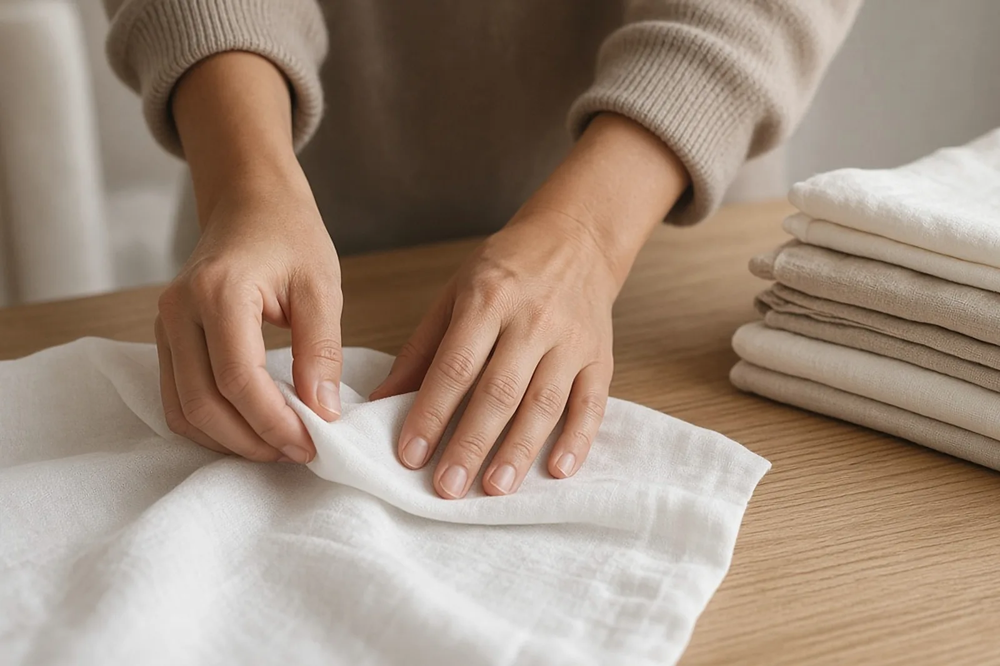

Studentenjob · Oostrozebeke · 8780
Studentenjob met flexibeleuren regio Oostrozebeke
Stel: je werkt in ploegen en hebt in sommige weken de voormiddagen vrij. Zondags binnen regio Oostrozebeke werkt met een vast rooster, dus we zeggen eerlijk wanneer dat past en wanneer niet.
Het korte antwoord
Zondags (zondags.be) zoekt binnen regio Oostrozebeke en de Leiestreek mensen vanaf 18 jaar voor vast werk overdag bij bedrijven: kantoren, praktijken en winkels. Het werk bestaat uit poetsen, administratieve hulp en praktisch regelwerk, op weekdagen. Een rooster dat elke week verandert past minder, omdat elke klant op een vaste dag en uur rekent. Studenten werken met een studentencontract. Voor anderen bekijken we het statuut samen in het eerste gesprek.
Ploegenwerk en een vast rooster, past dat?
Wie in ploegen werkt, kent de wisselingen: een week vroeg, een week laat, soms een week met vrije voormiddagen. Zondags werkt anders. Bij een klant komt je Zondag op een vaste dag en een vast uur, week na week. Dat is net de belofte aan het bedrijf: steeds dezelfde persoon op hetzelfde moment.
Daarom zeggen we het meteen eerlijk. Verandert jouw ploegenschema elke week en zijn die vrije voormiddagen dus niet voorspelbaar, dan past een vaste klant moeilijk. Is er een stabiel patroon, bijvoorbeeld elke tweede week dezelfde voormiddag, dan kunnen we daar samen naar kijken.
Hoe we met wisselende weken omgaan
In het eerste gesprek leggen we jouw schema naast de behoefte van de klanten. Soms vinden we een klant die maar om de twee weken iemand nodig heeft, zoals een kleine praktijk of een winkelier die een grondige beurt wil. Soms is een vast ritme met een vaste dag toch haalbaar.
Wat we niet doen, is je beloven dat het zal lukken. Past het niet, dan zeggen we dat, en dan heb je geen tijd verloren aan een traject dat vastloopt.
Het werk, in een lijstje
- Vloeren, sanitair en keuken van een kantoor of winkel
- Wachtzaal en onthaal van een praktijk
- Post sorteren en documenten klasseren
- Een bestelling kantoormateriaal controleren en bijvullen
- Pakjes en zendingen klaarmaken voor de zaakvoerder
Een technische klus of werk op hoogte hoort er niet bij. Je werkt overdag op weekdagen, nooit in de avond en nooit in het weekend.
Statuut en contract
Studenten krijgen een studentencontract en volgen zelf hun urensaldo op via Student@work. Heb je als ploegarbeider al een job, dan hangt het van je eigen situatie af wat mogelijk is. Dat bekijken we samen in het eerste gesprek. Past het ene statuut niet, dan zoeken we een ander dat wel past.
Je zit steeds in dienst van Zondags, met een verloning boven het barema en vergoede verplaatsingen.
Een voorbeeld van een voormiddag
Neem iemand die elke tweede week de voormiddagen vrij heeft. In die weken is hij van acht tot elf uur bij een kleine vzw voor mensen die kantoorwerk doen: hij zet de vergaderzaal klaar, poetst de refter en sorteert de post. In de andere weken werkt hij gewoon zijn ploeg. Zo een tweewekelijks ritme kan werken, als de klant dat wil.
Oostrozebeke en de buurt
Oostrozebeke heeft postcode 8780 en geen aparte deelgemeenten. We zoeken Zondags in en rond de gemeente, in de Leiestreek, met klanten ook richting Wielsbeke, Ingelmunster en Meulebeke.
Hoe je je aanmeldt
Stuur je schema en je gegevens via het formulier of de chat, of via WhatsApp op 0470 56 53 58. Binnen de twee werkdagen bellen we je. Lees ook studentenjob met flexibele uren of de pagina over werken met flexibele uren.

Veelgestelde vragen
Vragen en antwoorden.
Waar vind ik een studentenjob met flexibele uren binnen regio Oostrozebeke?
Bij Zondags. We zoeken binnen regio Oostrozebeke mensen voor vast werk overdag op weekdagen bij bedrijven. Aanmelden kan via het formulier, de chat of WhatsApp op 0470 56 53 58.
Kan ik werken als mijn ploegenschema wisselt?
Dat hangt af van hoe voorspelbaar je schema is. Een vast ritme lukt, een rooster dat elke week verandert niet. In het eerste gesprek zeggen we eerlijk wat past.
Kan ik blijven werken in mijn ploeg en daarnaast bij Zondags?
Dat hangt af van je eigen situatie en je contract. We bekijken samen welk statuut kan, en zoeken een ander statuut als het eerste niet past.
Heb ik ervaring met poetsen of administratie nodig?
Nee. Je bent minstens 18 jaar, betrouwbaar en discreet. Op de eerste dag leer je het werk samen met ons bij de klant.
Werk ik ook in de avond?
Nee. Zondags werkt enkel overdag op weekdagen, vroeg in de ochtend of over de middag. Nooit in de avond en nooit in het weekend.
Voor wie werk ik?
Voor bedrijven in de buurt, zoals kantoren, praktijken, winkels en bedrijfsleiders. Je bent hun vaste Zondag en werkt enkel in bedrijfsruimtes.
Solliciteer
Werk bij Zondags.
Laat je gegevens achter. Wij bellen je binnen de twee werkdagen.
Verder lezen